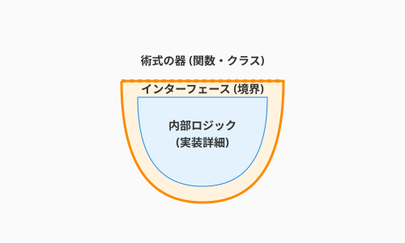

3.3 術式の器——関数・クラス・モジュール
導入: 器なき術式は霧散する
前節までに、あなたはアルゴリズムという「元素」と、制御構造という「術式の構文」を学びました。しかし、数十行の処理を直接書き連ねていくだけでは、コードはあっという間に読み解けない長文呪文になってしまいます。
ここで必要になるのが、処理を適切な単位に分けて名前をつけ、再利用できるようにする「器（Container）」です。関数、クラス、モジュール——これらの器を使いこなすことで、術式は整理され、他の魔術師（チームメンバー）と共有でき、未来の自分にとっても読みやすいものになります。
厳密に言えば、関数・クラス・モジュールはそれぞれ異なる概念です。特にクラスは「オブジェクト指向」、関数を中心に据える発想は「関数型」というように、プログラミングパラダイムと深く結びついています。その違いは3.6節で詳しく扱います。本節ではパラダイムの違いには立ち入らず、これらに共通する「処理をまとめて名前をつけ、適切な粒度で構造化する」という考え方に焦点を当てます。

関数（Function）: 最小の器
一つの関数 = 一つの仕事
関数は、処理をまとめる最も基本的な器です。良い関数は「一つの仕事」だけを担います。
# 一つの仕事に集中した関数
def calculate_xp_reward(quest: Quest, hero: Hero) -> int:
"""クエスト報酬の経験値を計算する"""
base_xp = quest.base_xp
level_bonus = 1.5 if hero.level < quest.recommended_level else 1.0
return int(base_xp * level_bonus)この関数は「経験値の計算」だけを行います。ログ出力もデータベース保存もしません。一つの仕事に集中しているからこそ、テストが書きやすく、変更にも強い関数になります。
これは3.4節で学ぶコードメトリクス（循環複雑度など）にも直結します。一つの仕事に集中した小さな関数は、自然と複雑度が低くなるのです。
引数と戻り値: 契約の明示
関数の入口（引数）と出口（戻り値）を明確にすることは、関数の「契約」を読み手に示すことです。
# 契約が明確な関数
def find_available_quests(
hero_level: int,
all_quests: list[Quest],
max_results: int = 10
) -> list[Quest]:
"""英雄のレベルに応じた受注可能なクエストを返す"""
return [
quest for quest in all_quests
if quest.required_level <= hero_level
and quest.status == "AVAILABLE"
][:max_results]型ヒント（int, list[Quest]）があることで、AIがコードを読み解く際にも正確な推論が可能になります。人間にとっても、AIにとっても優しい「契約書」です。
純粋関数と副作用
関数には2つの種類があります。
| 種類 | 特徴 | 例 |
|---|---|---|
| 純粋関数 | 同じ入力には常に同じ出力を返す。外部状態を変えない | calculate_xp_reward() |
| 副作用のある関数 | 外部状態を変更する（DBへの書き込み、ログ出力など） | save_quest(), print() |
# 純粋関数: 入力だけで出力が決まる
def calculate_damage(attack: int, defense: int) -> int:
return max(0, attack - defense)
# 副作用のある関数: 外部の状態を変更する
def complete_quest(quest: Quest, repository: QuestRepository) -> None:
quest.status = "COMPLETED"
repository.save(quest) # 外部（DB）への書き込み純粋関数はテストが容易で、並列処理にも強いという特徴があります。3.6節で学ぶ関数型プログラミングのパラダイムでは、この「純粋さ」が中心的な価値観となります。
すべてを純粋関数にする必要はありませんが、純粋な計算と副作用のある操作を意識的に分離することで、コードの見通しは大きく改善します。
スコープ: 名前が届く範囲
変数や関数には「見える範囲（スコープ）」があります。
total_xp = 0 # モジュールスコープ（広い）
def add_quest_reward(quest):
bonus = quest.base_xp * 0.1 # 関数スコープ（この関数内だけ）
global total_xp
total_xp += quest.base_xp + bonus # モジュールスコープの変数を変更スコープが広い変数（グローバル変数）を多用すると、「誰がいつこの値を変えたのか」が追いにくくなります。変数のスコープは必要最小限に留めるのが原則です。
クラス（Class）: データと振る舞いの器
フィールドとメソッド
関数が「処理」の器なら、クラスは「データとそれに関連する処理」をひとまとめにする器です。
class Hero:
"""冒険者を表すクラス"""
def __init__(self, name: str, level: int = 1):
self.name = name # フィールド: データ
self.level = level
self.xp = 0
self.inventory: list[Item] = []
def gain_xp(self, amount: int) -> None:
"""経験値を獲得し、必要ならレベルアップする"""
self.xp += amount
while self.xp >= self.xp_to_next_level():
self.xp -= self.xp_to_next_level()
self.level += 1
def xp_to_next_level(self) -> int:
"""次のレベルに必要な経験値を計算する"""
return self.level * 100第2章（2.1節）で学んだカプセル化を覚えていますか？ あの設計の視点が、ここでは実装として具現化されます。Heroクラスは、経験値の計算ロジックを内部に隠蔽し、外部からは gain_xp() というシンプルなインターフェースだけを公開しています。
コンストラクタ: 器の初期化
__init__ メソッド（コンストラクタ）は、オブジェクトが生まれる瞬間に呼ばれる特別なメソッドです。ここで、オブジェクトが正しい状態で生まれることを保証します。
class Quest:
def __init__(self, title: str, difficulty: str, base_xp: int):
# 生まれた瞬間から正しい状態を保証
if not title:
raise ValueError("Quest title is required")
if base_xp < 0:
raise ValueError("XP reward must be non-negative")
self.title = title
self.difficulty = difficulty
self.base_xp = base_xp
self.status = "AVAILABLE" # 初期状態は常に「受注可能」言語による表現の違い
「データと振る舞いをまとめる」という概念は、言語によって異なる姿をとります。
| 言語 | 表現 | 特徴 |
|---|---|---|
| Python, Java, C# | class |
最も一般的なクラスベースOOP |
| Rust | struct + impl |
データ定義と実装を分離 |
| Go | struct + メソッド |
継承なし、インターフェースで多態性 |
| JavaScript | class / プロトタイプ |
ES6以降はclass構文、内部はプロトタイプベース |
3.6節でパラダイムの違いを学ぶ際、この表現の違いが深く関わってきます。
モジュール / パッケージ: 大きな器
公開範囲の制御
モジュールは、関連するクラスや関数をまとめ、外部に何を見せるかを制御する器です。
# questforge/domain/quest.py（モジュール）
# 外部に公開するもの
class Quest:
"""クエストを表すドメインモデル"""
...
class QuestStatus:
"""クエストの状態を表す列挙"""
...
# 内部でだけ使うもの（先頭に _ をつける慣習）
def _validate_quest_data(data: dict) -> bool:
"""クエストデータの内部検証（外部からは呼ばない）"""
...Pythonでは _ プレフィックスが「内部用」を示す慣習です。Javaでは public / private キーワード、TypeScriptでは export の有無で制御します。
名前空間とインポート
モジュールは「名前空間」としても機能します。同じ名前の要素が衝突することを防ぎます。
# それぞれのモジュールに Item クラスがあっても衝突しない
from questforge.domain.items import Item as DomainItem
from questforge.presentation.dto import Item as ItemDTOパッケージ構成の例
QuestForgeのパッケージ構成を見てみましょう。
questforge/
├── domain/ # ドメイン層（ビジネスロジック）
│ ├── hero.py # Hero クラス
│ ├── quest.py # Quest クラス
│ └── items.py # Item クラス
├── application/ # アプリケーション層（ユースケース）
│ └── use_cases/
│ ├── complete_quest.py
│ └── assign_quest.py
├── infrastructure/ # インフラ層（外部接続）
│ ├── repositories/
│ └── api/
└── presentation/ # プレゼンテーション層（UI）
└── cli/この構成は、2.5節で学んだクリーンアーキテクチャの思想を、ファイルシステム上に投影したものです。各ディレクトリ（パッケージ）が一つの「責任の範囲」を持ち、依存の方向が内側（domain）に向かうよう整理されています。
器の階層構造
ここまで学んだ器を、階層として整理しましょう。
文（Statement）
└── 関数（Function） ← 処理のまとまり
└── クラス（Class） ← データ + 処理のまとまり
└── モジュール（Module） ← クラス・関数のまとまり
└── パッケージ（Package） ← モジュールのまとまり各レベルで「関心の分離」が行われています。
| レベル | 分離するもの | 例 |
|---|---|---|
| 文 | 個々の操作 | hero.xp += reward |
| 関数 | 一つの処理 | calculate_reward() |
| クラス | 一つの責任 | Hero（冒険者に関する全て） |
| モジュール | 一つの領域 | domain/hero.py（英雄ドメイン） |
| パッケージ | 一つの層 | domain/（ビジネスロジック全体） |
小さな器（関数）でうまく整理できていれば、大きな器（クラス、モジュール）も自然と整います。まずは「一つの関数 = 一つの仕事」を徹底することが、コードの構造化の出発点です。
QuestForge実践例: 報酬計算の構造化
「クエスト完了時に報酬を計算して付与する」という処理を、器の階層で構造化してみましょう。
# --- 関数レベル: 個別の計算 ---
def calculate_xp_multiplier(quest: Quest, hero: Hero) -> float:
"""難易度とレベル差による経験値倍率を算出"""
if quest.difficulty == "HARD" and hero.level < quest.recommended_level:
return 2.0
if quest.difficulty == "HARD":
return 1.5
return 1.0
def calculate_quest_xp(quest: Quest, hero: Hero) -> int:
"""クエストの経験値報酬を計算"""
multiplier = calculate_xp_multiplier(quest, hero)
return int(quest.base_xp * multiplier)
# --- クラスレベル: ユースケースの統合 ---
class CompleteQuestUseCase:
"""クエスト完了ユースケース"""
def __init__(self, quest_repo: QuestRepository, hero_repo: HeroRepository):
self.quest_repo = quest_repo
self.hero_repo = hero_repo
def execute(self, quest_id: str, hero_id: str) -> CompletionResult:
quest = self.quest_repo.find_by_id(quest_id)
hero = self.hero_repo.find_by_id(hero_id)
# 純粋関数で計算
xp_reward = calculate_quest_xp(quest, hero)
# 副作用のある操作
quest.status = "COMPLETED"
hero.gain_xp(xp_reward)
self.quest_repo.save(quest)
self.hero_repo.save(hero)
return CompletionResult(quest=quest, xp_gained=xp_reward)純粋な計算（calculate_xp_multiplier, calculate_quest_xp）と副作用のある操作（execute内のDB保存）が、器の階層によって自然に分離されています。
まとめ
- 関数は最小の器: 一つの関数に一つの仕事を割り当て、引数と戻り値で契約を明示する。
- 純粋関数と副作用を意識する: 計算と状態変更を分離すると、テストしやすく見通しの良いコードになる。
- クラスはデータと振る舞いの器: 第2章で学んだ設計思想を、実装として具現化する。
- モジュール/パッケージで関心を分離: 公開範囲を制御し、大規模なコードベースでも秩序を保つ。
- 器の階層を意識する: 文→関数→クラス→モジュール→パッケージの各レベルで、適切な粒度の関心分離を行う。
AIへの詠唱例
以下の長い関数を、「一つの関数 = 一つの仕事」の原則に従って分割してください。
純粋関数として切り出せる計算部分と、副作用のある操作を明確に分離してください。
[コードを貼り付け]以下のコードを、適切なクラスとモジュールに分割して構造化してください。
QuestForgeプロジェクトのクリーンアーキテクチャ（domain / application / infrastructure）に沿った
パッケージ構成も提案してください。
[コードを貼り付け]ハンズオン: 長い関数を分割してみよう
シナリオ
以下の「すべてを1つの関数で行っている」コードを、本節で学んだ原則に従って分割してください。
def process_quest_completion(quest_id, hero_id, db):
quest = db.execute("SELECT * FROM quests WHERE id = ?", quest_id)
if not quest:
print("Quest not found")
return None
hero = db.execute("SELECT * FROM heroes WHERE id = ?", hero_id)
if not hero:
print("Hero not found")
return None
if quest["status"] != "ACTIVE":
print("Quest not active")
return None
xp = quest["base_xp"]
if quest["difficulty"] == "HARD":
xp = int(xp * 1.5)
db.execute("UPDATE quests SET status = 'COMPLETED' WHERE id = ?", quest_id)
new_xp = hero["xp"] + xp
db.execute("UPDATE heroes SET xp = ? WHERE id = ?", new_xp, hero_id)
print(f"Quest completed! {hero['name']} gained {xp} XP")
return {"quest": quest, "xp_gained": xp}ステップ
- 純粋関数を抽出: XP計算のロジックを純粋関数として切り出す
- 検証を分離: ガード節として入力検証をまとめる
- 副作用を明示: DB操作を行う部分を明確にする
AIに「この関数を分割して」と依頼し、結果を本節の原則と照らし合わせてみてください。
さらに学ぶためのリソース
- 📚 書籍: Robert C. Martin『Clean Code アジャイルソフトウェア達人の技』（「関数は小さく」「引数は少なく」など、実装の細部を美しく保つためのバイブル）
- 📚 書籍: Sandi Metz『オブジェクト指向設計実践ガイド ―Rubyでわかる 進化し続ける柔軟なアプリケーションの作り方』（クラスの責任をどう分けるか、言語を問わず役立つ設計の知恵）
- 🌐 Web: Python 公式チュートリアル "クラス"（Pythonのクラス機構とスコープに関する公式解説）
- 📄 論文: Barbara Liskov and Stephen Zilles "Programming with Abstract Data Types" (1974)（データ抽象と抽象データ型（ADT）の概念を確立した歴史的論文）
執筆メモ:
- 執筆日時: 2026-02-01
- 構成: 3.2節（文レベルの制御）と3.4節（メトリクス/静的解析）の間を埋める新節
- 内容: 関数・クラス・モジュールによる処理の構造化。2章の設計→実装への橋渡し、3.6節FPへの伏線